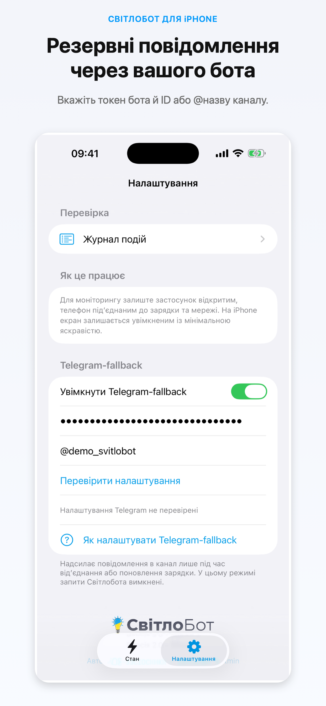
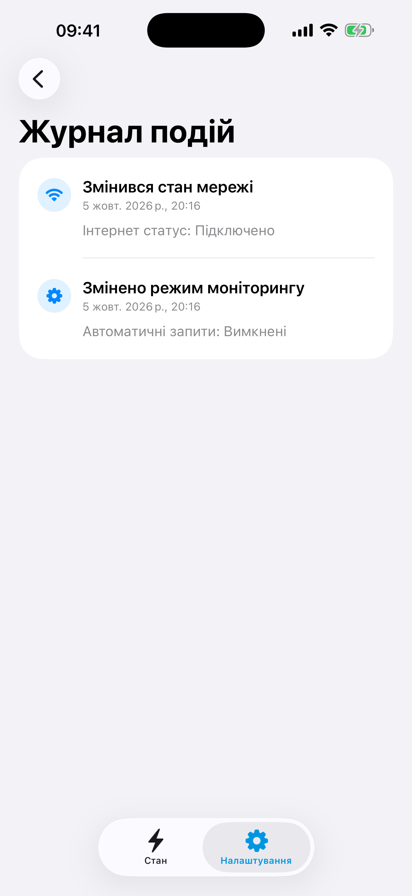

Початок роботи
Інструкція до СвітлоБота
Налаштуйте один із двох режимів сповіщень. Вони взаємовиключні, тож одночасних однакових повідомлень не буде.
01 · Підготовка
Перед початком
- Пристрій з iOS або iPadOS 14.0 чи новішої версії.
- Доступ до інтернету під час передавання сигналів.
- Для режиму Світлобота — ключ потрібного каналу.
- Для Telegram-fallback — бот із правом публікувати в каналі.
Застосунок визначає локальний стан заряджання телефона. Це приблизний індикатор, а не пряме вимірювання електропостачання.
02 · Режим Світлобота
Надсилайте сигнали серверу Світлобота
- Додайте ключ каналу. Введіть його під час першого запуску або відкрийте налаштування пізніше.
- Увімкніть автоматичний моніторинг. Під’єднайте iPhone або iPad до зарядного пристрою та залиште застосунок відкритим.
- За потреби ввімкніть миттєве сповіщення. Після припинення заряджання застосунок один раз надішле додатковий сигнал `channelPingOff`.
- Перевірте канал. Відкрийте екран статусу каналу, надішліть тестовий запит або перегляньте журнал подій.
03 · Telegram-fallback
Надсилайте повідомлення власним ботом
- Створіть Telegram-бота через @BotFather і скопіюйте токен.
- Додайте бота до потрібного каналу й надайте йому дозвіл публікувати повідомлення.
- Увімкніть Telegram-fallback у налаштуваннях застосунку й введіть токен бота. Токен зберігається у Keychain; не передавайте його іншим людям.
- Вкажіть числовий ідентифікатор каналу або його публічний `@username`, натисніть «Перевірити налаштування» та підтвердьте ввімкнення.
Fallback реагує на зміну заряджання. Втрата інтернету сама по собі не створює повідомлення, але невдалі спроби зберігаються в локальній черзі для повторної доставки після відновлення зв’язку.
У цьому режимі запити `channelPing` і `channelPingOff` до серверу Світлобота не надсилаються. Повідомлення йдуть від вашого бота безпосередньо до Telegram.

04 · Щоденне використання
Моніторинг і швидкі команди
На головному екрані переглядайте умови моніторингу, активний режим, останні сигнали та стан доставки Telegram-повідомлень. Доступні також команди для застосунку Apple «Швидкі команди»: затримка, кількість циклів, стан заряджання й ручний запит.
Під час моніторингу застосунок може зменшувати яскравість і не дозволяти екрану автоматично блокуватися, щоб підтримувати регулярні сигнали. Після закриття основного екрана це обмеження знімається.
05 · Журнал
Переглядайте історію подій
Журнал показує події моніторингу й результат доставки fallback-повідомлень. Дані журналу зберігаються локально на пристрої. Не додавайте до публічних звітів скриншоти з ключами каналу або приватними даними.

Потрібна допомога?
Перегляньте поширені запитання або напишіть на svitlobot@gmail.com. Вразливості повідомляйте лише приватно через сторінку безпеки.